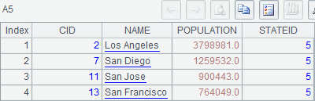
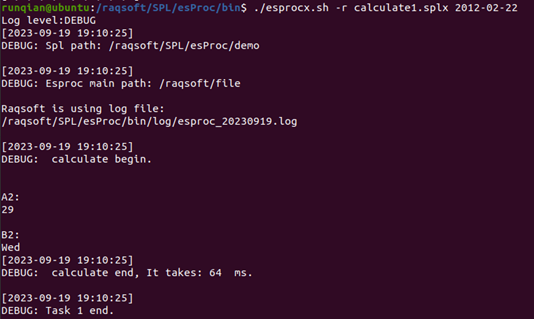
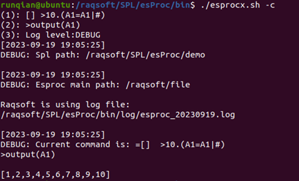
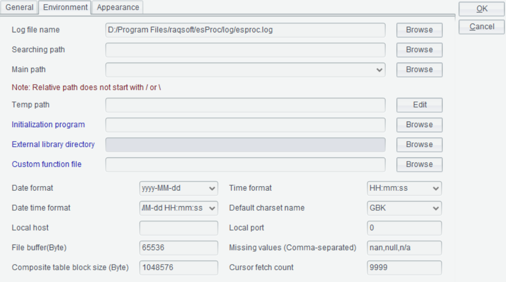

6.1.4 Using command line under Linux
We can also use the command line under Linux, with similar uses to those under Windows. Difference is that the command called is esproc.sh. To run a cellset file output1 that does not return any result, for instance:
DEBUG log level is set up to view more detailed entries. We can see that the output result is completely same as that under Windows.
We can see similar output result for other command line executions. To execute calculate1.splx that returns a result:

To pass a parameter, just add the parameter after the to-be-called cellset file:

Under Linux, we can also use -c option to execute a cellset script. Unlike executions under Windows, Ctrl+D is needed to confirm the start of execution after the script is successfully input. For example:

By using -r option, we can see the result returned by return statement:

We can also execute simple SQL queries under Linux, as the following shows:
